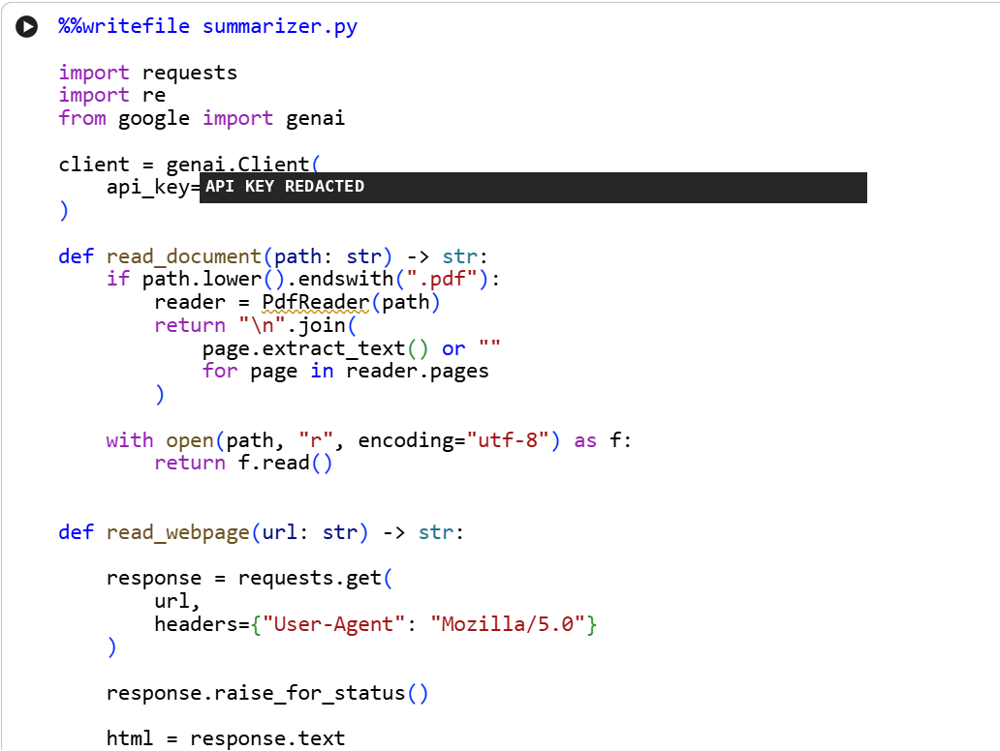
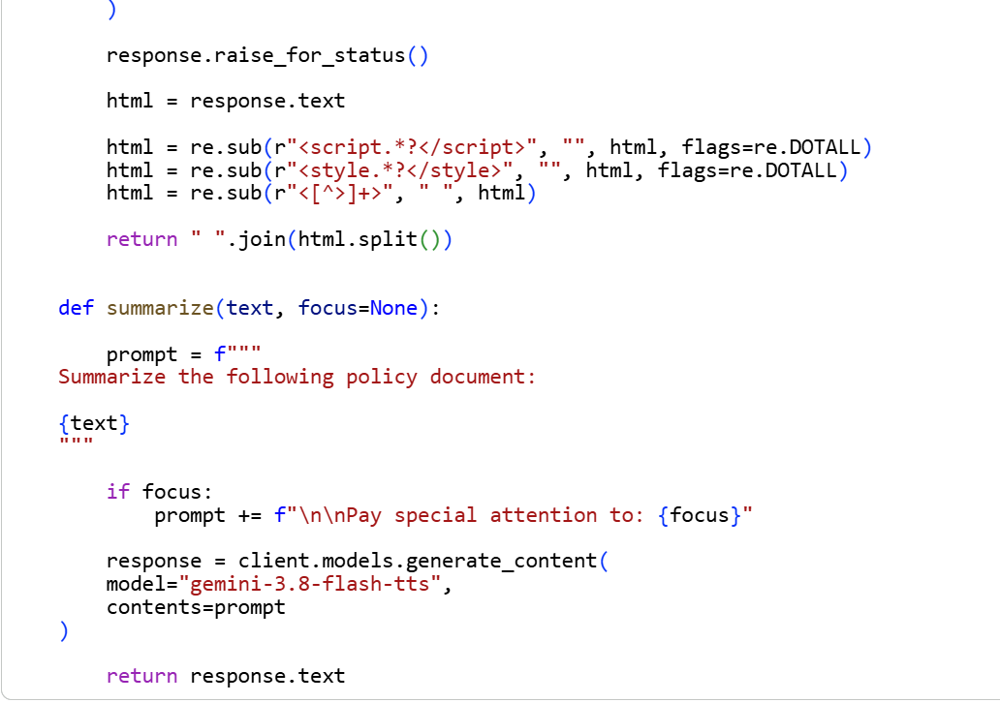
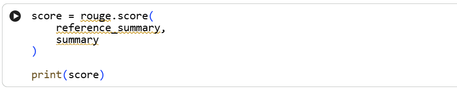
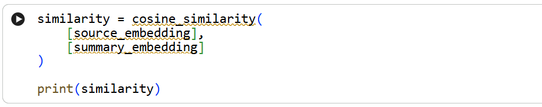

Portfolio / Project write-up
Policy Summarizer: AI Agent
Policy Summarizer is an ai agent, built and run in Google Colab, that reads a policy from a PDF, a text file or a web page and returns a summary.It also checks dates mentioned in the policy and compares older vs newer version of the policy. It sends the text to a Google Gemini model through the google-genai SDK, with an optional focus topic that tells the model what to pay special attention to. It is an agent, that chooses the tools (read_document,read_webpage,check_dates,compare_versions) to execute the next step as per user based input.
Overview
Policies in HR, compliance, insurance and IT security are long and dense, and people often skim them and miss deadlines, exceptions and obligations. This agent turns a policy into a short summary a reader can act on.
It accepts three kinds of input, which is what makes it useful across domains: a PDF, a plain text file, or the address of a policy page on the web. An optional focus topic, such as “maternity leave” or “data retention,” tells the model what to pay special attention to.
Download Project Write-UpHow it works
Read
PDF pages are read with pypdf, text files are opened as UTF-8, and web pages are downloaded with requests.
Clean
For web pages, scripts, styles and HTML tags are removed and the whitespace is collapsed into plain text.
Summarize
The text goes to a Gemini model with an instruction to summarize the policy, plus an optional line asking for special attention to the focus topic.
Evaluate
The summary is scored against a reference summary with ROUGE, and against the source with embedding similarity.
The code
The agent lives in a single module, summarizer.py, written from a Colab notebook cell. The API key is hidden in the screenshot below for publication.

read_document handles PDF and text files. read_webpage downloads a page with a browser-style User-Agent header and raises an error if the request fails.
summarize builds the prompt, appends the focus line when one is given, and calls the model.Evaluation
A summary can sound right and still be wrong, so I added two automatic checks. They are quick signals, not proof of accuracy.


Limits and next steps
- Test set. Score a set of policies from several domains, each with a reference summary, so the results are comparable over time.
- Faithfulness and coverage. Add a check that every claim is supported by the source, a checklist of key facts per policy (deadlines, penalties, exceptions), and a script that confirms dates and amounts in the summary appear in the source.
- Long documents. Split very long policies into chunks, summarize each, then combine the results.
- Scanned PDFs. These have no text layer, so they need OCR before summarizing.
- Citations. Return page or section references so a reader can verify each point quickly.